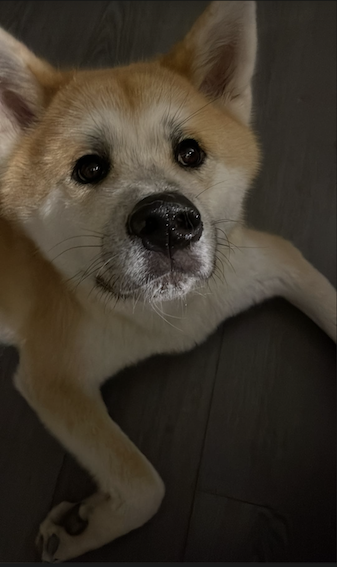
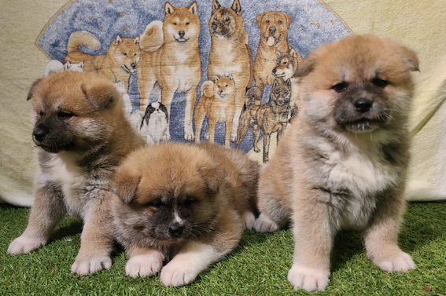

Bonjour, je m'appelle Okami, je suis un chien de race Akita Inu.

La race des Akita est originaire de la région japonaise du même nom. C'est une région nordique avec beaucoup de neige, nous sommes donc équipés pour supporter le froid.
Je suis né non loin du Mans, en Sarthe, mais j'ai vite déménagé dans le sud de la France, à Marseille, quand j'ai été adopté.
J'ai un frère et une soeur, mais je ne suis plus en contact avec eux, j'espère qu'ils mènent une belle vie !

Voici quelques informations à mon propos :
| Anniversaire | Poids | Robe |
|---|---|---|
| 01/10/2024 | 33 kg | Sable |
La race des Akita a largement été démocratisée aux yeux du public grâce à l'histoire de Hachikou, l'Akita qui a loyalement attendu son maître pendant des années à la gare de Shibuya. Son maître est malheureusement décédé au travail, mais Hachi a attendu son retour à la gare jusqu'à son dernier souffle.
Un film a même été réalisé sur cette histoire, il s'appelle Hachi, Richard Gere joue dedans, mais attention avant de le regarder, il est assez triste.
Il ne sera pas surprenant d'apprendre que nous sommes connus pour notre loyauté. Nous sommes également généralement perçus comme intelligents, mais très têtus. Nous faisons ce que nous voulons faire avant de faire ce que notre maître nous demande.
Voici une liste, non exhaustive, de ce que j'aime :
Voici une vidéo retraçant mes expéditions et missions dans les mystérieuses Calanques marseillaises :